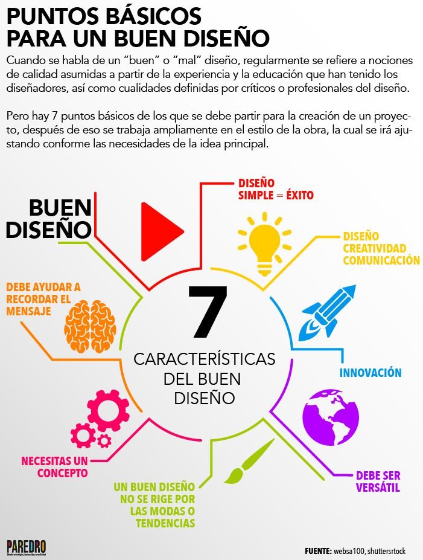

- Funciones:
- Libros y cubiertas de CD
- Pósteres, folletos y desplegables.
- Artículos de papelería y logotipos.
- Productos de embalaje y mostradores.
- Sitios web y juegos de ordenador.

Ventajas |
Desventajas |
||
| 1. Utilizas los dos hemisferios del cerebro | 2. Eliges cómo, cuándo y desde dónde trabajar | 1. El diseño es subjetivo | 2. La creencia extendida de que el diseño es «fácil» |
| 3. Está entre las profesiones más demandadas | 4. Recibes reconocimiento por tu trabajo | 3. No poner límites puede colocarte en una posición difícil | 4.Puedes encontrarte con fechas limite acotadas |
Como diseñador gráfico necesitará poseer las características siguientes::
- Tener habilidades creativas e ideas originales.
- Dibujar con claridad y precisión.
- Poseer una buena comprensión del color, la forma y la figura.
- Tener buenas habilidades de comunicación, presentación y negociación.
- Saber trabajar bien solo y con otras personas.
- Prestar atención a los detalles.
- Tener conocimientos de programas relacionados con el diseño.
- Poseer buenas habilidades de investigación.
- Tener flexibilidad para adaptar diseños a las necesidades de sus clientes.
- Saber aceptar positivamente críticas.
- Tener buenas habilidades de organización y planificación.
- Trabajar ciñéndose a fechas de entrega y presupuestos..

Pagina1
Pagina3